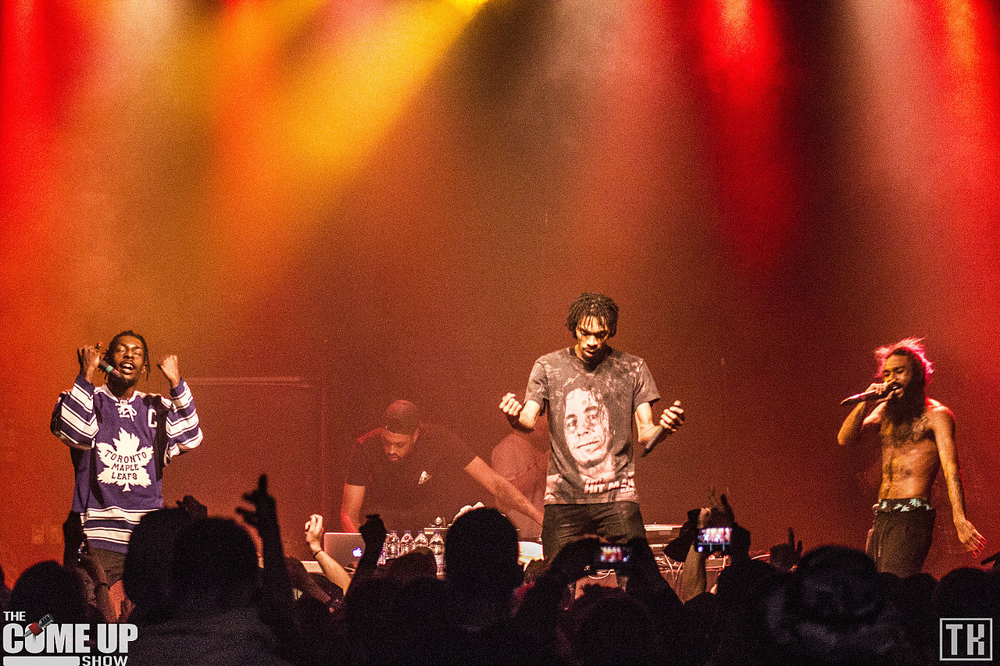
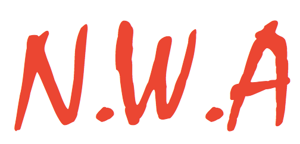

Flatbush Zombies Release 'now, more than ever' EP Stream
The Flatbush Zombies have returned to their group dynamic after dropping the Escape From New York album with the Beast Coast collective in 2019. The trio has released a new EP titled now, more than ever as their official follow-up to 2018’s Vacation In Hell LP.
Erick Arc Elliott, Meechy Darko and Zombie Juice’s latest work is comprised of six tracks. Sophie Faith makes the lone guest appearance on the EP.

N.W.A's 'Fuck Tha Police' Streams Nearly Quadruple Amid Nationwide Protests
N.W.A has been shouting “Fuck Tha Police” for over 30 years. Written by Ice Cube, MC Ren and The D.O.C., the track took aim at police brutality and the racial profiling running rampant in their L.A. neighborhoods.
In 2020, their words still ring true and have become somewhat of an anthem for the current protests and riots erupting across the country in the name of George Floyd.
According to Rolling Stone, the Straight Outta Compton song has seen a 272 percent increase in on-demand audio streams from May 27 through June 1, compared to the five days before Floyd’s death.

The song picked up particularly on Sunday (May 31) and Monday (June 1), with 765,000 on-demand audio streams over those two days, which is nearly five times the streams the song was seeing on the previous Sunday and Monday before the protests.
Meanwhile, Childish Gambino’s platinum-selling single “This Is America” saw a 149 percent jump in streams over the same time period as “Fuck Tha Police” thanks in part to TikTok.
Kendrick Lamar’s “Alright” went up 71 percent, Public Enemy’s “Fight the Power” increased by 89 percent, D’Angelo and the Vanguard’s “The Charade” witnessed a 122 percent jump, Killer Mike’s “Don’t Die” exploded with a 542 percent spike and Beyoncé’s “Freedom” hopped up 70 percent.
Even the 1968 James Brown song “Say It Loud — I’m Black and I’m Proud” saw a 455 percent spike as did Nina Simone’s “I Wish I Knew How It Would Feel to Be Free,” which increased by 34 percent.